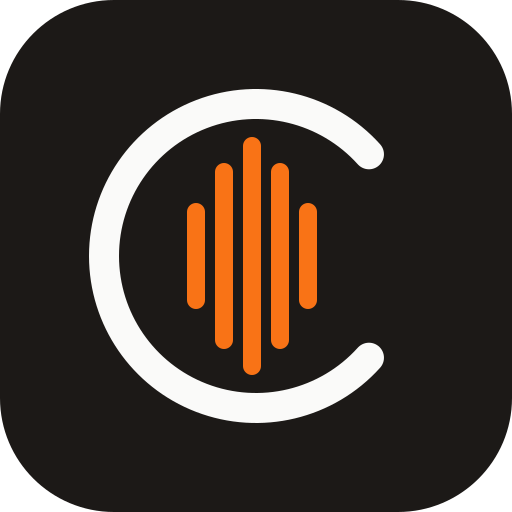

chords
importer
Connect the extension to your Chords backend.
Site URL
Where the Chords app is served (it proxies
/api
), e.g.
http://localhost:8000
.
Auth token
Your JWT. Easiest: log into the app in a tab, then click “Grab token from app tab”.
Save
Grab token from app tab